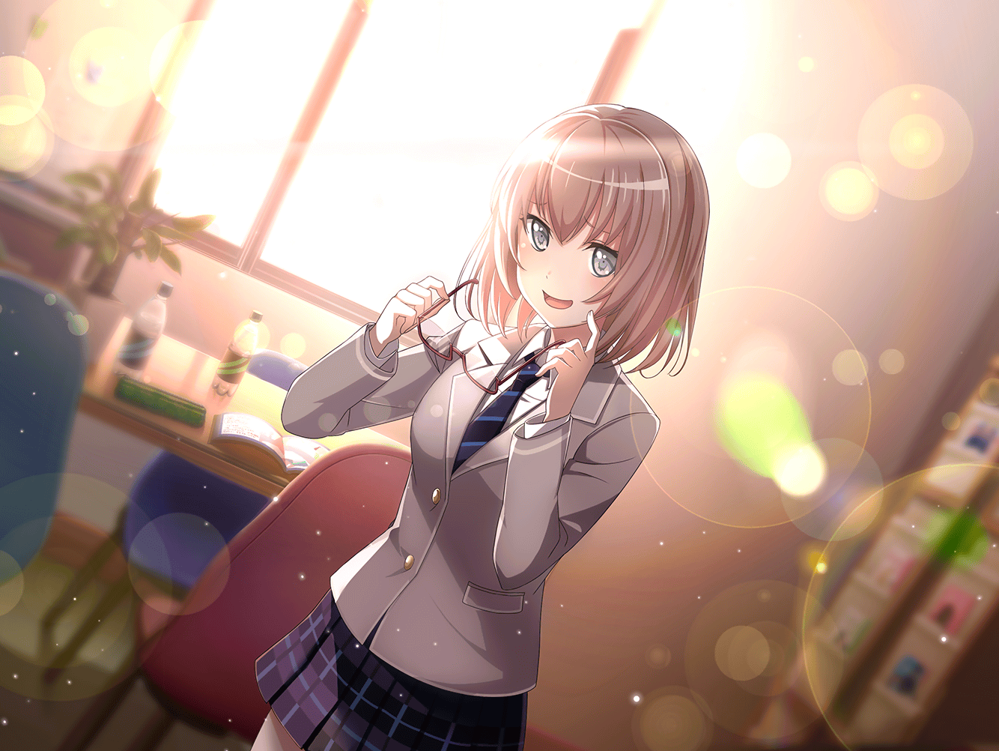

日菜
おっつかれさま～！
今日はいつもよりみんな、るんってしてたね。
演奏してて、すっごくテンション上がっちゃったよ！
麻弥
はい。彩さんものびのび歌っていましたし、
ジブンも気持ちよく演奏できました
麻弥
バンドを結成し始めた頃と比べて、
かなりレベルアップしたと思いますよ
日菜
うんうん！
最初は、練習なんて面倒くさいなーって思ってたけど、
今は毎日、るんって思えて楽しいよ！
日菜
それじゃあ、あたし達もそろそろ帰ろっか
麻弥
そうですね
麻弥
…………
麻弥
（よく考えると、ちょっと前まではスタジオミュージシャンとして
いろんなバンドのサポートをしてたのに、今はこうして、
Pastel＊Palettesのみんなでバンドをしてるんですね……）
日菜
麻弥ちゃーん。どうしたの？
おいてくよー？
麻弥
あっ、すみません。
ちょっとスカウトされた時のことを思い出しちゃって……
日菜
スカウト？
日菜
ああ、そういえば麻弥ちゃんって、
千聖ちゃんからスカウトされたんだよね。
覚えてる覚えてる！
麻弥
はい。いつもみたいにサポートで入ってたんですけど、
千聖さんから声を掛けられて……。
さすがにあの時はビックリしましたよ
麻弥
まさかジブンがアイドルにスカウトにされるなんて
思わなかったですからね。
いまだに実感がないんですよ
日菜
えー。
これだけ一緒にレッスンしたり、ライブしたりしてるのに？
麻弥
ええ、そうなんですよね。
みんなと演奏している時は一体感というか
そういうのを感じるんですけど……
麻弥
ふとした時に、
ジブンがみんなの中にいてもいいのか、って……
麻弥
ああっ！ い、今のは、その……。
もちろん、疎外感があるとかじゃないですよ！？
みなさんやさしくて、いい人達ばかりですし！
日菜
あははっ、だいじょーぶ！
ちゃんとわかってるよ。
みんなと一緒にいる時の麻弥ちゃん、すっごく楽しそうだもん！
麻弥
そ、そうですか？
それならよかったです……
日菜
んー、でも……。
麻弥ちゃんがそんなふうに思ってたなんて、
知らなかったな～
麻弥
そ、それは……なんて言えばいいんですかね
麻弥
彩さんはアイドルになりたくて研修生をしてて、
千聖さんは子役として活動、
イヴさんはモデルをしていたじゃないですか
麻弥
日菜さんはオーディションを受けて……。
みんな、自分の意志でこの世界……芸能界に入ったんですよね
日菜
あたしはおもしろそうって理由だけどねー
麻弥
はは、日菜さんらしくていいと思いますよ
麻弥
ジブンは音楽が好きで
スタジオミュージシャンをしてましたけど……
麻弥
スカウトされなかったら、
関わることのない世界だったのかなって思うんですよ
麻弥
一般の人から見ると、スタジオミュージシャンは
芸能人に思われることもありますが……
正確には芸能人ではないですしね
日菜
そういえば、麻弥ちゃんはスタジオミュージシャンか
エンジニアになりたいって言ってたもんね
麻弥
はい。
だからそう考えると、みんなとこうして一緒にいるのが
不思議だなって思うことがあるんです
麻弥
……もし、あの時サポートとして別の人が入っていたら、
その人がジブンの代わりにメンバーになっていたんでしょうか？
日菜
そうかもねー。
そもそも、他にドラムが叩ける人がいたら、
麻弥ちゃんのサポートは終わってたわけだし？
麻弥
うぅ……っ！
悪気がないのはわかってるんですけど、
直接言われるとグサッときます……！
日菜
あはは、ごめんねー？
でも、あたしは麻弥ちゃんが入ってくれて
よかったと思ってるよ
麻弥
ふへっ！？
日菜
ドラムは上手いし、話は面白いでしょー？
たまに変な笑い方するのもおもしろいし！
日菜
だからあたしは『麻弥ちゃんが』いいなぁ
麻弥
ジブンがいい……
日菜
麻弥ちゃんだけじゃなくて、
Pastel＊Palettesは今のメンバーが１番いいなって思うよー？
日菜
彩ちゃんはなんであんなに何度もめげずに挑戦できるのか、
理解できないし、
イヴちゃんは武士しゃべりする時、すっごくおもしろい！
日菜
千聖ちゃんは頭いいから話してて楽しいし、
まだまだあたしが知らない顔がありそうで気になる！
日菜
今までいろんなことに手を出して、すぐに飽きちゃってたけど、
こんなに１つのことが長続きするのは久しぶり……いや、初めて？
日菜
う～ん、どうだったっけ……まあ、そんな感じかな
麻弥
日菜さん……
麻弥
（日菜さんはただのドラマーじゃなくて、
ちゃんと『大和麻弥』として見ててくれてたんですね……）
麻弥
（それに、みんなのことも……）
麻弥
ふ、フヘヘ……ありがとうございますっ！
すごくうれしいです！
日菜
うれしい？
褒めたつもりはないんだけどなー
日菜
やっぱ麻弥ちゃんっておもしろいよね。
彩ちゃんもおもしろいけど、麻弥ちゃんもすっごいおもしろい！
麻弥ちゃんと話してると、るるるんってするな♪
麻弥
恐縮です！
麻弥
（……あの時、千聖さんが声を掛けてくれてよかった。
これからもPastel＊Palettesのメンバーとして、
精進あるのみですね！）